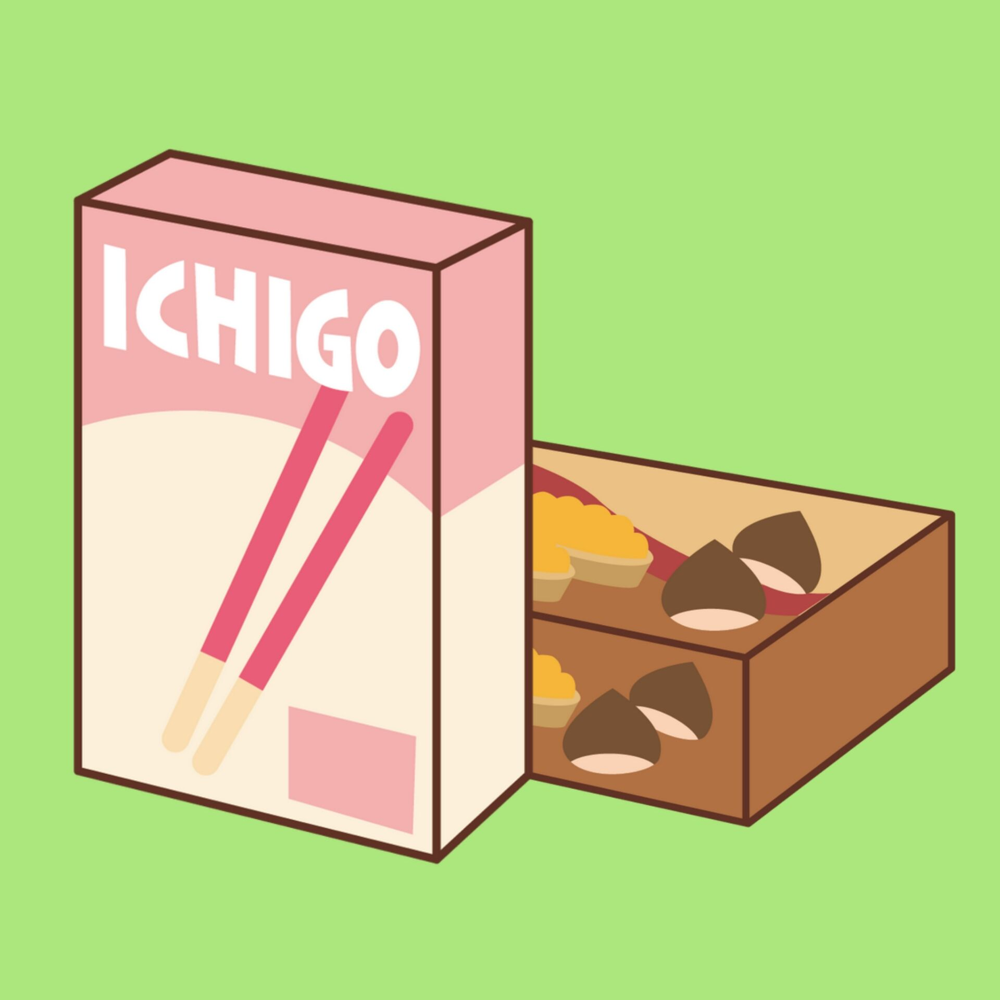

博客作业
在这里，两张图片中一张引用方式为绝对路径（https://github.com/wruoruo/wruoruo.github.io/blob/master/image/drink.jpg），另一张为相对路径（./image/snack.jpg）。
)
绝对路径

相对路径
wruoruo's blog
若若管理此博客，博客还在完善中...
可爱(拼音:kě ài)，汉语词汇，意思是令人敬爱的。也指令人喜爱的，讨人喜欢的，深受热爱的。
《书经.大禹谟》:"可爱非君?可畏非民?"
【宋】陆游《老学庵笔记.卷四》:"荆棘中有崖石，刻树石二大字，奇古可爱。"
绝对路径
相对路径